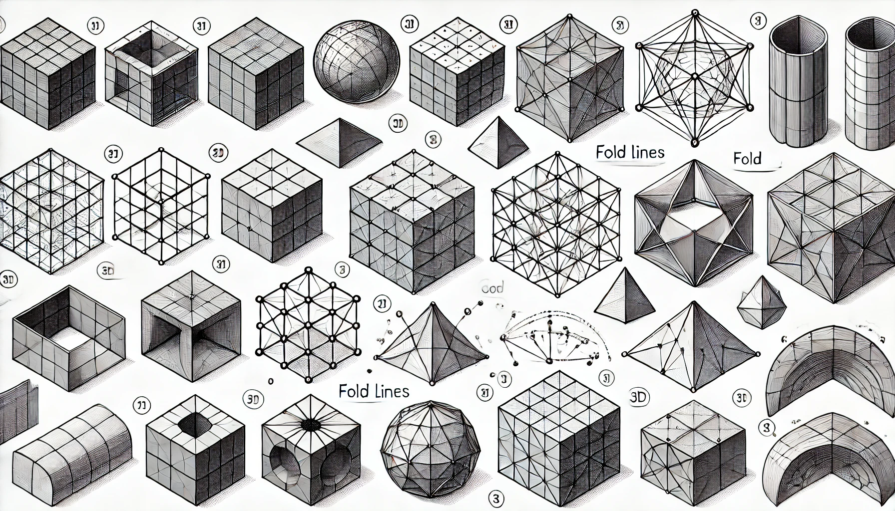
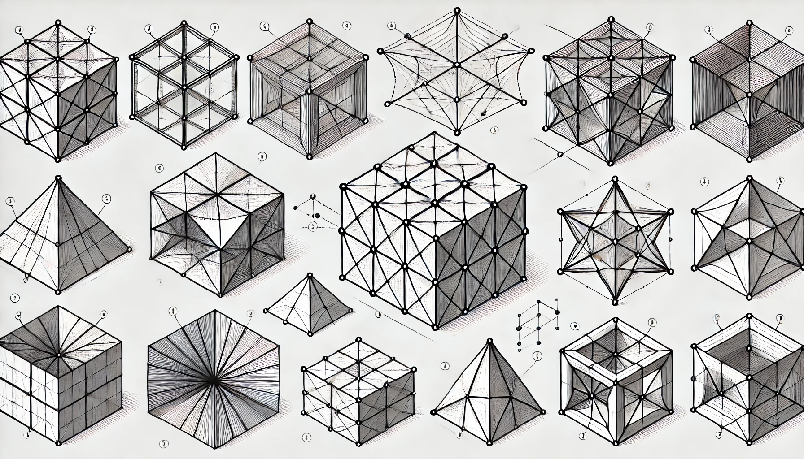
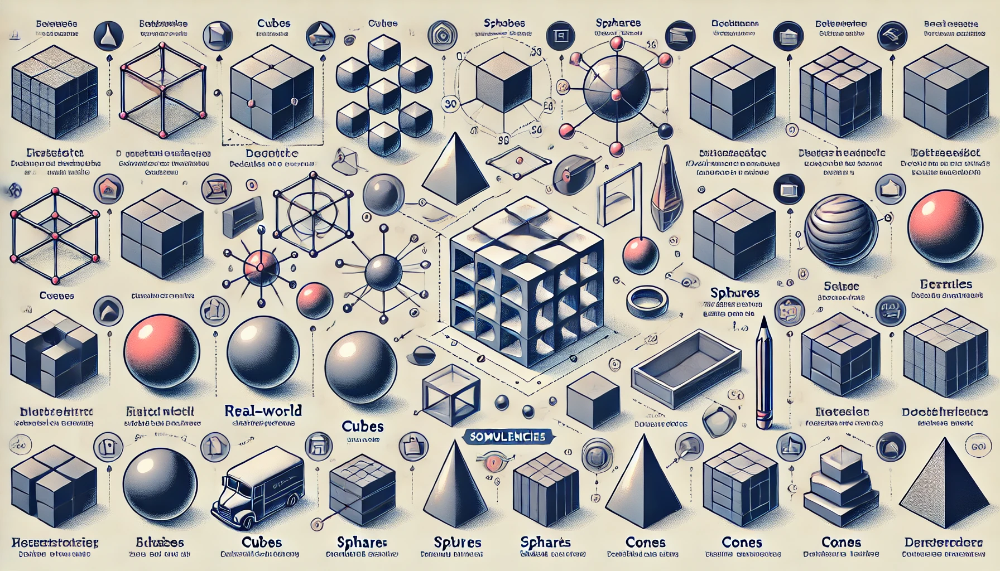
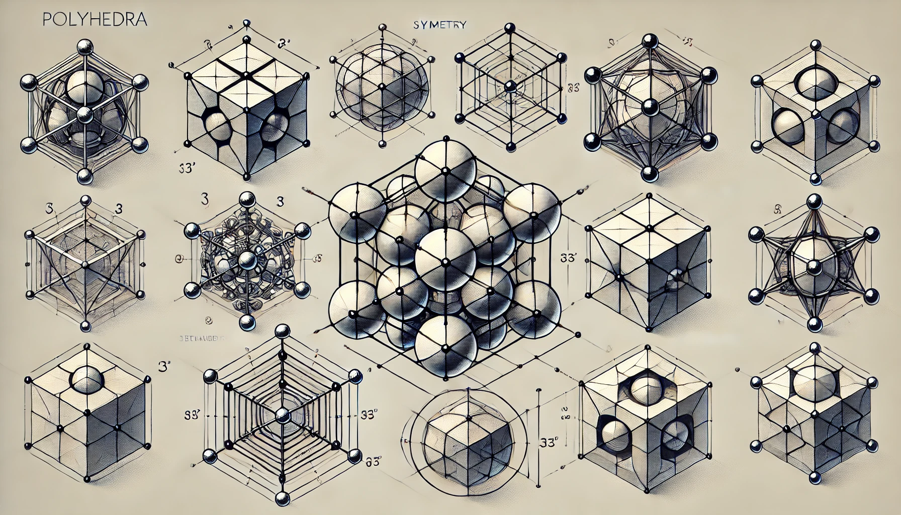
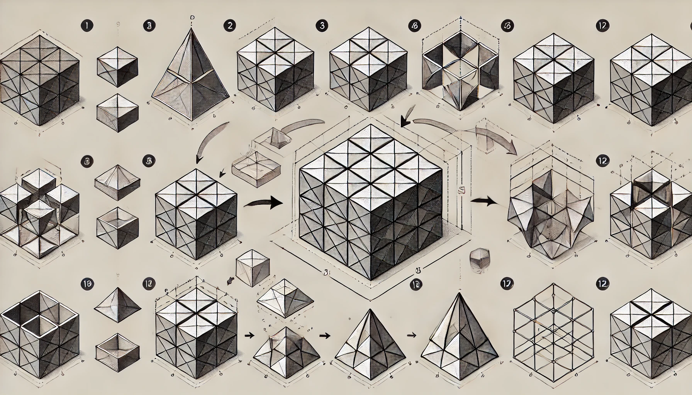
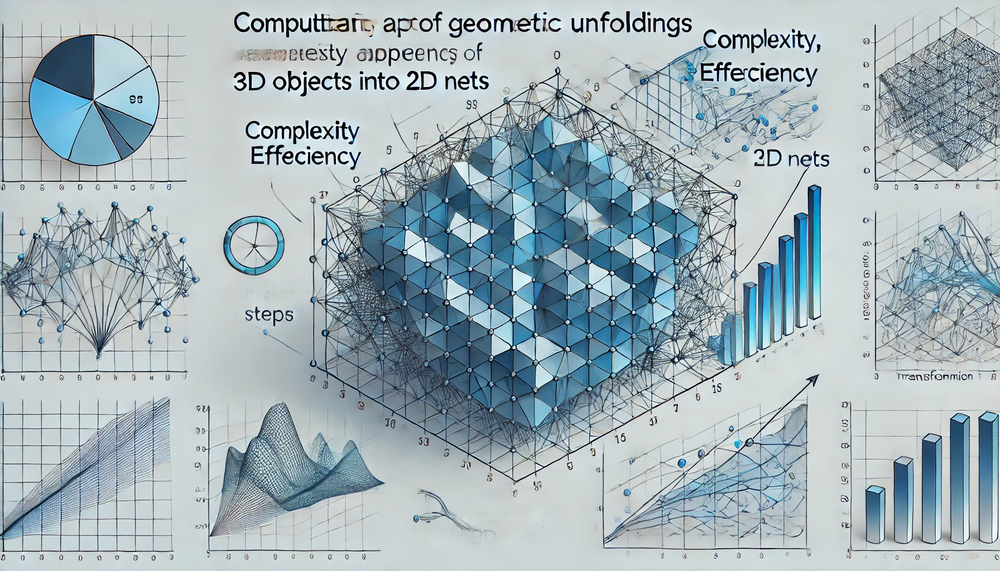
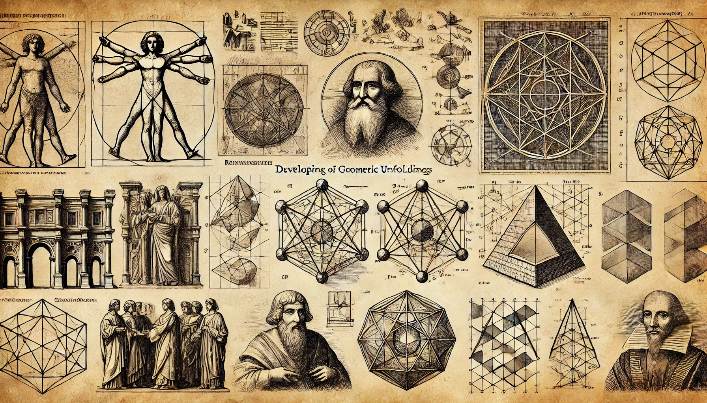

Лекция: «Понятие о предмете и его форме. Законы формообразования геометрических тел. Общие сведения о развертках. Развертка поверхностей геометрических тел.»
Введение
Геометрия играет фундаментальную роль в понимании окружающего мира. Знание формы предметов и закономерностей их построения помогает решать задачи в математике, инженерии, архитектуре и дизайне. В этой лекции мы рассмотрим основные понятия, методы построения разверток и практические задания для закрепления материала.

1. Понятие о предмете и его форме
F
B
L
R
T
Bo
1.1. Определения и основные понятия
Предмет – материальный объект, обладающий размерами, формой и структурой.
Предмет – это объект, который можно измерить и описать, обладающий формой и размерами.
Форма – совокупность геометрических характеристик объекта: контуры, пропорции, симметрия и структура поверхности.
Форма – визуальное представление объекта, определяемое его контурами и пропорциями, что придаёт эстетическую и функциональную ценность.
Быстрый вопрос
Вопрос: Какие характеристики определяют форму предмета?

2. Законы формообразования геометрических тел
2.1. Основные принципы
Формообразование – процесс создания объёмных тел по определённым закономерностям:
Принцип симметрии: Объекты обладают осевой, центральной или радиальной симметрией.
Эквивалентность граней: Все грани правильного многогранника имеют одинаковую форму и размеры.
Непрерывность поверхности: При построении развертки поверхность объекта должна быть связной.
Быстрый вопрос
Вопрос: Какой принцип упрощает построение многогранников?

2.2. Формальные закономерности
Эйлерова формула: Для выпуклых многогранников выполняется V - E + F = 2.
Правила построения правильных тел: Платоновы тела характеризуются равенством всех граней, рёбер и углов.
2.3. Примеры формообразования
Куб: Образуется из шести квадратных граней, обладает трёхосевой симметрией.
Пирамида: Имеет многоугольное основание и боковые треугольные грани, сходящиеся в вершине.
Цилиндр: Тело с двумя круглыми основаниями и боковой криволинейной поверхностью.
3. Общие сведения о развертках
3.1. Понятие развертки
Развертка – способ плоского изображения поверхности объёмного тела через «разгибание» его боковых граней. Этот метод позволяет анализировать площадь, упрощать черчение и визуализировать структуру объекта.
Куб: Стандартная развертка – «крест».
Пирамида: Боковые треугольники, развёрнутые вокруг основания.
Цилиндр: Боковая поверхность – прямоугольник, основания – отдельно.

3.2. Значение разверток
Развертки имеют образовательное, практическое и исследовательское значение, помогая визуализировать объёмные объекты, проводить расчёты и оптимизировать производство.
4. Развертка поверхностей геометрических тел
4.1. Методика построения развертки
Для построения развертки выбираются линии разреза, сохраняются пропорции и обеспечивается непрерывность поверхности.
4.2. Построение разверток для различных тел
Куб: Варианты развертки: «крест», расположение в два ряда.
Пирамида: Боковые треугольные грани разворачиваются вокруг основания.
Цилиндр: Боковая поверхность превращается в прямоугольник, круговые основания – отдельно.
4.3. Ошибки и особенности
Неправильный выбор линий разреза может привести к искажению пропорций и невозможности восстановления фигуры.

5. Практическое применение и методы исследования разверток
5.1. Применение в инженерном и техническом черчении
Развертки помогают оптимизировать раскрой материалов, моделировать объекты и создавать точные чертежи.
5.2. Топологический и графовый подход
Методы топологии позволяют свести задачу построения развертки к раскрашиванию графа или нахождению эйлерова пути.
5.3. Вычислительные аспекты
Из разверток можно вычислить площади, периметры и оценить симметрию объектов, что важно для инженерных расчётов.

6. Исторический аспект и развитие темы
6.1. История изучения разверток
Изучение разверток началось с древнегреческих математиков, таких как Евклид, а в эпоху Возрождения они активно применялись в архитектурном черчении и декоративно-прикладном искусстве.
6.2. Влияние на современное образование и практику
Современные методы изучения разверток опираются на достижения топологии, компьютерной графики и инженерного моделирования – знания, обязательные для курсов по геометрии.

7. Задания по уровням сложности
Ниже приведён перечень письменных заданий для закрепления материала. Задания выполняются с использованием геометрических инструментов (линейка, циркуль, карандаш и т.д.).
Уровень 1 (Базовые задания)
Определите термины «предмет» и «форма». Приведите примеры геометрических тел с регулярной формой (например, куб, сфера, пирамида).
Нарисуйте развертку куба (вариант «крест») и подпишите все грани, объясните выбор линий разреза.
Изобразите развертку прямоугольного параллелепипеда с обозначением размеров граней и линий разреза.
Сравните два варианта развертки куба, опишите их сходства и различия.
Уровень 2 (Задания средней сложности)
Нарисуйте развертку правильной треугольной призмы с двумя треугольными основаниями и тремя боковыми гранями.
Постройте развертку правильной пирамиды с квадратным основанием, обозначив боковые грани и основание.
Сравните две развертки: корректную для куба и вариант с ошибкой в выборе разрезов.
Для куба с ребром 4 см рассчитайте суммарную площадь всех граней по развертке.
Уровень 3 (Сложные задания)
Нарисуйте развертку цилиндра: боковая поверхность превращается в прямоугольник, а разверните одно из круговых оснований отдельно.
Проанализируйте схему развертки, составленную из многоугольников. Определите корректность развертки и предложите улучшения.
Выберите многогранник (например, октаэдр) и проверьте выполнение Эйлеровой формулы V - E + F = 2 по его развертке.
Сформулируйте алгоритм построения развертки для любого выпуклого многогранника, приведите примеры для двух фигур.
Предложите оригинальный вариант развертки для куба и объясните его преимущества.
Опишите, как принцип симметрии влияет на выбор линий разреза в развертках различных тел.
Изготовьте модель объекта по разработанной развертке (бумага, ножницы) и опишите процесс, выявленные трудности и способы их решения.
Задания выполняются на бумаге с использованием геометрических инструментов. Подробное описание каждого задания поможет разобраться в методах построения разверток и развить пространственное мышление.
8. Практическое задание: Мини-инструмент для черчения
Используйте инструмент ниже для выполнения практических заданий. Вы можете выбрать режим «Свободное рисование» для эскизов или режим «Прямая линия» для построения ровных линий с привязкой к сетке.